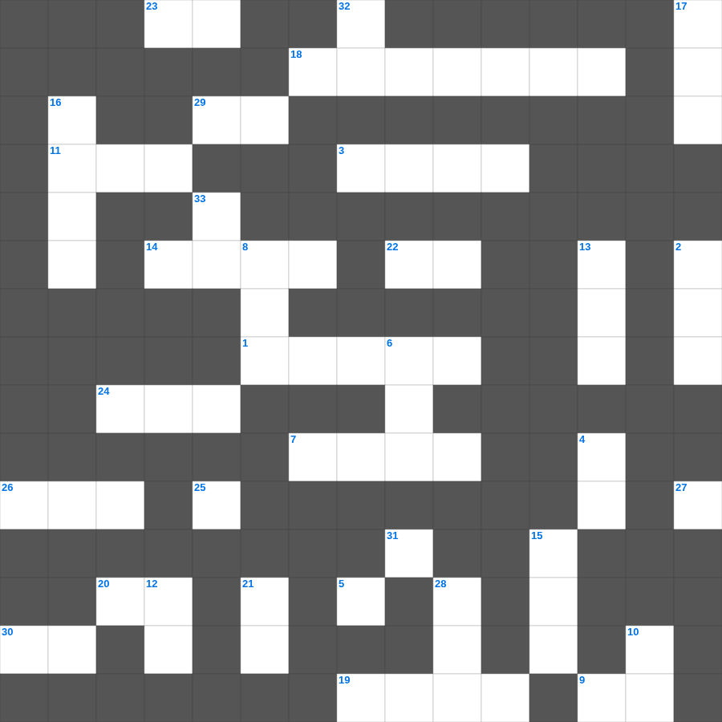

골로새서 마스터 50
📌 서비스 정의
십자가로세로는 교회 주보와 주일학교에서 사용할 수 있는 성경 기반 가로세로 퍼즐 서비스입니다. 성경 인물, 사건, 핵심 구절을 바탕으로 제작되었습니다. 온라인 풀이 및 인쇄 기능을 제공합니다.
📖 골로새서란?
골로새서는 그리스도의 우월성과 충족성을 강조하며, 거짓 가르침에 흔들리지 않고 그리스도 중심의 삶을 살도록 권면하는 바울의 서신입니다.
📚 골로새서의 주요 사건·주제
만물의 창조주이자 머리이신 그리스도 · 거짓 가르침에 대한 경고 · 그리스도와 함께 죽고 다시 삶 · 새 사람의 삶에 대한 권면 · 가정과 직장에서의 신앙 실천
무료로 즐기는 골로새서 골로새서 성경 퍼즐! 35개의 힌트로 구성된 가로세로 낱말 퍼즐입니다. PC와 모바일 모두 지원되며, 정답을 바로 확인할 수 있어 혼자서도 쉽게 풀 수 있습니다.

📝 가로 힌트
1. 문화세가 성전에 세웠던 가증한 것
3. 미가 5:2에서 예언된 메시아의 탄생지
5. 주 여호와는 나의 이것이시라 나의 발을 사슴과 같게 하사 나를 나의 높은 곳으로 다니게 하시리로다
7. 포기하지 아니하면 때가 이르매 이것으리라
9. 그리스도의 말씀이 너희 속에 풍성히 거하여 모든 지혜로 피차 가르치며 이것하며
11. 그가 시험을 받아 고난을 당하셨은즉 시험 받는 자들을 능히 무엇하실 수 있느니라
11. 하나님이 요구하시는 것 '여호와를 경외하며 그의 모든 이것을 행하는 것'
14. 예수님이 베드로와 야고보와 요한을 데리고 기도하신 동산
18. 나답과 아비후의 시체를 치운 친척
19. 아브라함의 아내가 죽은 후 묻힌 굴
20. 어리석은 자가 되지 말고 오직 주의 뜻이 무엇인가 이것하라
22. 성막 입구의 방향
23. 누구든지 네 이것함을 업신여기지 못하게 하고 오직 말과 행실과 사랑과 믿음과 순결에 있어서 믿는 자에게 본이 되어
24. 나오미의 며느리 중 고향으로 돌아간 여인
25. 하나님의 사랑하심을 받은 형제들아 너희를 이것하심을 아노라
26. 저주를 선포한 산
29. 무릇 율법 행위에 속한 자들은 이것 아래에 있나니
30. 성전을 떠나지 않고 금식하며 기도하던 여선지자
📝 세로 힌트
2. 이스라엘의 첫 번째 사사 (갈렙의 사위)
4. 안식일에 밀 이삭을 잘라 먹은 제자들
5. 베드로전서 4장 11절: 봉사할 때 가져야 할 마음가짐: 하나님이 공급하시는 이것으로
6. 여호와께서 시온에서 부르짖고 예루살렘에서 이것을 내시리니 하늘과 땅이 진동하리로다
8. 삼손의 아버지 이름
10. 거룩함에 흠이 없게 하시기를 원하노라... 우리가 주 예수 안에서 너희에게 구하고 이것하노니
12. 생명의 성령의 법이 죄와 사망의 법에서 너를 이것하였음이라
13. 겨울 전에 어서 오라... 이것과 부데와 리노와 클라우디아와 모든 형제가 다 네게 문안하느니라
15. 요나단이 단신으로 블레셋 진영을 공격한 곳
16. 우리의 신앙 고백문
17. 요셉이 팔려간 집의 주인(친위대장)
21. 베드로의 신앙고백 직후 예수께서 처음으로 예고하신 것
27. 변화산에서 베드로가 초막 몇 셋을 짓자고 했나
28. 모세의 아내 이름
31. 요단 동쪽 지파들이 세운 증거의 제단 이름
32. 요한이서 1장 10절: 이단이 오면 집에 들이지도 말고 무엇도 하지 말라 했나
33. 변화산에서 예수와 함께 대화하던 두 구약 인물: 엘리야와 이것
🧩 이 퍼즐에서 배우는 내용
이 퍼즐은 골로새서 마스터 50의 핵심 단어와 개념을 자연스럽게 복습할 수 있도록 구성되었습니다. 주일학교 수업이나 개인 성경공부에서 학습 내용을 점검하는 용도로 바로 활용할 수 있습니다.
🧑🏫 교회 교육 자료 활용
이 퍼즐은 주일학교 교재 추천 자료로 활용할 수 있고, 주일학교 주보에 넣기 좋은 분량으로 구성되어 있습니다. 수업용 주일학교 교안에 활동지로 붙이거나, 예배 후 복습용 주일학교 공과교재로 바로 사용할 수 있습니다.
🏷️ 키워드
골로새서 성경 퍼즐, 골로새서, 십자가로세로, 성경퀴즈, 말씀퀴즈, 가로세로퍼즐, 주일학교 교재 추천, 주일학교 주보, 주일학교 교안, 주일학교 공과교재